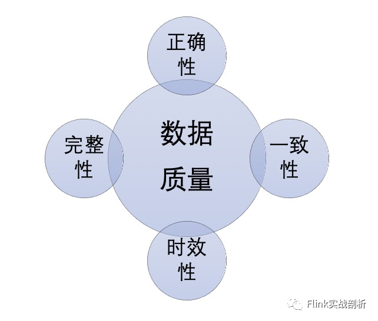

数仓指标一致性以及核对方法
转自公众号：Flink实战剖析
http://mp.weixin.qq.com/s?__biz=MzU5MTc1NDUyOA==&mid=2247484722&idx=1&sn=1d333147aafa3547e341e996aaccf59a
数仓数据质量衡量标准

完整性：完整性可以从两个方面来说：一个是模型数据的完整性，例如字段是否存在空值、数据量是否波动比较大有数据缺失等；另一方面指标的丰富程度，是否有完整的数据指标来支撑业务上的分析决策。
一致性：一致性表示相同的业务指标在不同的场景下(这里的场景可以系统、数据模型、实时/离线等)其指标值不一致。通常的问题可能是计算口径不一致、计算数据来源不一致等等。
关于数据质量衡量标准除了以上四个维度外，可能还会有规范性、安全性等上面的考虑，其中一致性是出现比较多的一类问题，同时排查起来的难度也比较大，笔者将结合实际开发中遇到的一致性问题谈谈自己的看法。
指标一致性
指标计算口径不一致，指标由不同的数据需求方提出其对指标的定义不同或者是不同的数据开发同学对指标的理解不同导致了不同的计算口径， 例如广告订单统计，一个是session口径，一个是cookie口径； 计算使用的数据源不一致，这里面可能是有重复的采集链路，数据采集的规则又不一致；
不同的业务口径数据，使用了相同的指标命名，没有按照数据开发规范或者是没有统一的字段命名规范导致命名歧义，例如下单金额/支付金额同时命名为order_amt。
组织的合理性
需求/模型评审机制
数据缺失，在明细数据层某个维度的数据出现空值情况导致向上汇总记录丢失；
计算口径不一致，例如商品维度数据与计划维度数据其计算的口径不一致，必然导致向上汇总结果不一致。
计算逻辑无法对齐，其原因有二：一、实时、离线是两个不同的数据团队成员开发，其对业务的理解不同；二、离线逻辑本身相对比较复杂，可以做很多补偿逻辑，实时处理却相对比较简单； 数据源不一致，通常接入的数据源有日志与binlog，binlog基本都能保证一致，但是对于日志在一些场景不能做到完全一致，例如风控场景提供的点击日志提供下游使用，实时、离线反作弊模型差异导致风控过后的数据存在差异；
离线、实时技术栈对一致性的支持程度不同，离线通常都是批处理的调度模式，当出现异常情况，只需要重新调度直接进行分区覆盖即可，而实时处理本身对消息处理的顺序性有比较高的要求，另外加上端到端一致性实现复杂等等，在某些场景并不能保证与离线同等的一致性。
「PDF」就可以看到阿里云盘下载链接了！


Hi，我是王知无，一个大数据领域的原创作者。 放心关注我，获取更多行业的一手消息。